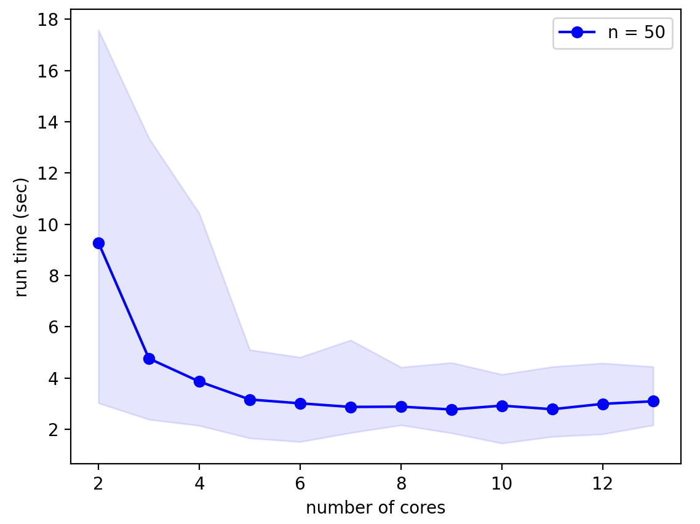

Getting started¶
Model introduction¶
NeuroDevSim uses an agent-based approach to modeling neural development, with Front objects as agents that can extend, branch, migrate, etc.
Each NeuroDevSim model is described by a complete python program. Part of this program follows a standard template, specific model properties are minimally defined in three methods:
A method describing the behavior of a
Front:manage_frontwhich is part of a new subclass of Front class defined for each type of neuron.The simulation volume that is specified in the Admin_agent class instantiation.
Admin_agenttakes care of running the simulation.Create a number of somata, each becomes the root of a growing neuron: use the
Admin_agent.add_neuronsmethod.
Model template¶
The general template of a simple model is:
# STANDARD: import all classes, methods and functions needed
from neurodevsim.simulator import *
# declare a subclass of Front
class MyFront(Front):
# declare a customized growth method for the new subclass
def manage_front(self,constellation):
...
# STANDARD: initialize and run the simulation
if __name__ == '__main__':
# declare parameters for Admin_agent
num_processes = 4
fname = "filename.db"
sim_volume = [[0., 0., 0.], [100., 100., 100.]]
neuron_types = [MyFront]
# instantiate Admin_agent
admin = Admin_agent(num_processes,fname,sim_volume,neuron_types)
# declare parameters for add_neurons
name = "a_neuron"
num_neurons = 1
location = [50.0,50.0,50.0]
radius = 5.0
# make a soma and set the neuron name
admin.add_neurons(MyFront,name,num_neurons,location,radius):
# STANDARD: run the simulation
admin.simulation_loop(50)
# STANDARD: clean up before quitting
admin.destruction()
We explain each part of the template briefly. Full descriptions of the classes and methods can be found in simulator module, while the manage_front method is explained in more detail later.
First import the different NeuroMaC support functions and classes:
from neurodevsim.simulator import *
Everything needed to run the simulation is imported at once from the neurodevsim.simulator module. There is an additional neurodevsim.processing module that has functions to Plotting the simulation and make movies from the simulation database. If random numbers are needed NumPy should also be imported.
The model will simulate the behavior of growing neurons, with most of the growth processes encapsulated in fronts. First define for each different type of neuron in the model a new subclass derived from Front:
class MyFront(Front):
The name, MyFront, can be chosen freely. The rest of the statement is fixed.
An essential part of the new class definition is the manage_front method:
class MyFront(Front):
def manage_front(self,constellation):
manage_front defines the growth, migration etc. behavior of the neuron model and is explained in detail in manage_front method.
After defining all the neuron classes, the main program is started:
if __name__=="__main__":
This statement should never be changed.
The first parts of the main part of the program initialize different structures needed for a NeuroDevSim simulation. Begin with instantiating an Admin_agent class, for clarity its parameters are defined first:
if __name__ == '__main__':
# declare parameters for Admin_agent
num_processes = 4
fname = "filename.db"
sim_volume = [[0., 0., 0.], [100., 100., 100.]]
neuron_types = [MyFront]
# instantiate Admin_agent
admin = Admin_agent(num_processes,fname,sim_volume,neuron_types)
Admin_agent controls the overall simulation and manages the parallel processing using different cores.
In this example 5 cores will used: one to run Admin_agent and 4 processes (num_processes) that compute the simulation.
Admin_agent also generates the model output, which is written to a sqlite database file with the user provided fname ‘filename.db’. All NeuroDevSim databases use the ‘.db’ suffix, it will be added if not provided. Most users do not need to worry about the structure or content of the database, but information is available in Understanding the database. Figures and movies can be produced with nds_plot or nds_movie respectively and other analysis routines are also available (processing module).
NeuroDevSim simulations run in a rectangular volume with boundaries defined in sim_volume. These are defined as list of [x, y, z] coordinates in µm with x representing width, y depth and z height. The first list is therefore the left-front-bottom coordinate and the second list is the right-back-top coordinate. Coordinates can be negative.
The final obligatory parameter to Admin_agent is a list of all Front subclass names that will be used in the simulation in neuron_types. These need to be declared in advance to allow for proper set-up of the shared memory.
Other optional parameters to Admin_agent can set the level of verbosity, set the random seed or activate and control interactive plots.
Now that Admin_agent is up and running, neurons can be added to the simulation. Each neuron in NeuroDevSim has to be declared and this results in the placement of a soma in the simulation volume. This soma will be the root of a growing tree.
The Admin_agent.add_neurons method is used to create somata:
# declare parameters for add_neurons
name = "a_neuron"
num_neurons = 1
location = [50.0,50.0,50.0]
radius = 5.0
# make a soma and set the neuron name
admin.add_neurons(MyFront,name,num_neurons,location,radius)
In the example above only a single neuron is created. The parameters are respectively: the neuron Front subclass (that has been declared in neuron_types for Admin_agent), a name for the neuron (maximum 34 characters long), number of neurons to be created, location of the neuron somata and radius of the soma.
The add_neurons call above creates a single instance of MyFront named a_neuron_0_ with a soma of radius 5 µm at the location [50,50,50]. When multiple neurons are created, the location becomes a list defining a bounding box: [left,front,bottom] to [right,back,top]. The following example randomly distributes 10 soma instances of MyFront within a layer at the bottom of the simulation volume, somata are separated by at least their diameter:
# make a soma and set the neuron name
admin.add_neurons(MyFront,name,10,[[20,20,5],[80,80,10]],radius)
The neurons will be numbered consecutively: a_neuron_0_, a_neuron_1_,… Instead of random placement, somata can also be placed on a grid by providing an optional grid parameter or their origins can be specified as a list. add_neurons can be called repeatedly to create complex distributions of soma locations or to mix different neuron classes in the simulation as will be shown in A small network.
Now the initialization is complete and the simulation can be run:
admin.simulation_loop(50)
One needs to specify the number of simulation cycles, i.e. number of growth events for each neuron, to be simulated. It is 50 in the example above. simulation_loop can be called repeatedly so that model settings can be changed in between.
When the simulation is complete, it should be cleaned up properly:
admin.destruction()
This is important because the simulation is multi-process: all running python processes need to be terminated explicitly.
Running the examples¶
There are two ways to run a NeuroDevSim simulation, including the examples:
Using jupyter notebook. This is the preferred method for the Examples, which are all available as notebooks in the examples directory.
Run it as python program in a terminal window. This is more convenient if a large number of simulations needs to be performed or if large models are simulated.
There is no significant difference in run-time between either approach for an Admin_agent verbose=0 setting.
Notebooks can also provide active 3D plots that are generated during the simulation. One turns on plotting during the Admin_agent instantiation:
...
# STANDARD: initialize and run the simulation
if __name__ == '__main__':
...
# instantiate Admin_agent with plot=True
admin = Admin_agent(num_processes,fname,sim_volume,neuron_types,plot=True)
When the simulation is finished the 3D plot can be rotated, zoomed in/out, etc. To draw the notebook plot an extra core is used, so the total cores used to run the simulation becomes num_processes + 2. Note that even with the extra core drawing plots makes simulations run significantly slower: the motor_neuron example in Real Morphologies notebook runs 10-30 times slower depending on hardware. Similarly, the text output generated with the default verbose=1 Admin_agent setting makes this example run ~20% slower.
Warning
if a notebook simulation crashes the python, processes on num_processes cores may still be running, shown by the filled circle top right in the notebook window. Use the restart the kernel button (the circular arrow) at the top of the notebook window to kill these processes.
To run a simulation in a terminal window the code should be saved in a file, e.g. myfront.py, and run as a python process:
python myfront.py
Use the functions in the processing module to analyze the simulation results, for example by plotting to a pdf file and making a movie:
from neurodevsim.processing import *
# generate a pdf file 'myfront.pdf' from the NeuroDevSim database 'myfront.db'
nds_plot('myfront.db')
# generate a movie 'myfront.mp4' from the NeuroDevSim database 'myfront.db'
nds_movie('myfront.db')
Neurons as a tree¶
Before delving deeper into coding for growth, the properties of fronts will be explained in more detail. Agent-based modeling was introduced previously. Fronts act as agents, which means in practice that each active front calls the manage_front method separately and during this call it is referred to as self.
Fronts have several attributes that decide on their position and role, properties related to their place in the tree hierarchy are mostly accessed by methods:
Public read-only attributes:
self.orig: a
Pointas coordinate, specifying the origin of a cylinder or center of a sphere.self.end: a
Pointas coordinate, specifying the end of a cylinder.self.radius: the radius of the front in µm.
self.path_length: distance in µm to soma center along the tree structure.
self.num_children: number of children of the front in the tree structure.
self.birth: simulation cycle when the front was created.
self.order: centripetal order of branching in the tree structure, soma has order 0.
self.swc_type: a code describing which part of the neuron is represented as defined in Cannon et al. 1998, see SWC types used in NeuroDevSim.
Important methods:
self.get_id(): returns the
IDof self, theIDis a unique identifier for each front.self.is_cylinder(): returns True if front is a cylinder, False if it is a sphere.
self.get_parent(constellation): returns the parent of self.
self.get_children(constellation): returns a list of all children of self.
self.get_soma(constellation): returns the soma of the neuron self belongs to.
self.get_neuron(constellation): returns the
Neuronself belongs to.self.get_neuron_name(constellation): returns the name of the neuron self belongs to.
self.get_branch_name(): returns the optional branch name of self.
Many more methods are available, see simulator module. The get_parent, get_children and get_soma methods return by default a Front or list of Front, but with the optional parameter returnID=True they will return an ID or list of ID instead. They can in addition print the information.
To illustrate how these attributes and methods reflect a real growing neuron they are shown for the example that was introduced previously in Agent-based modeling. Note that the numbers on the fronts symbolize their ID, but real ID are more complex.

manage_front method¶
The manage_front method specifies all of the model specific growth, migration, etc. rules that act on Front.
A very simple case will be described, based on the RandomFront subclass in Errors and Exceptions notebook and Random Growth notebook. manage_front takes 1 argument:
class RandomFront(Front):
def manage_front(self, constellation):
manage_front is called by every active RandomFront at every simulation cycle. The calling front is self. The argument is the Constellation class, a complex data structure that contains information about all other fronts and substrates in the simulation and provides a few methods. The constellation is not used directly, it is passed to other NeuroDevSim methods.
Basic growth¶
We’ll start with a very simple example: growth of a single branch from the soma:
class RandomFront(Front):
def manage_front(self,constellation):
if self.path_length < 100: # continue growth till close to border of simulation volume
# extend towards right with a bit of noise
new_pos = self.end + Point(10.,0.,0.) + unit_sample_on_sphere() * 3.0
new_front = self.add_child(constellation,new_pos,radius=1.) # make a new front
self.disable(constellation) # make calling front inactive: stops growing
This code will produce a single slightly wiggling red branch connected to the black soma:

Let’s look at each line of the code. The first line restricts the total length of the branch so that it stays within the simulation volume:
if self.path_length < 100: # continue growth till close to border of simulation volume
only if the current front has a path_length shorter than 100 µm will it make a child to extend the branch. If this is the case then the end position new_pos of the new child front has to be computed:
new_pos = self.end + Point(10.,0.,0.) + unit_sample_on_sphere() * 3.0
new_pos is computed relative to the end point self.end of the calling cylindrical front. Growth is to the right: the Point structure generates in this case a x, y, z vector with length 10 µm pointing towards the right (positive x). Finally a bit of noise is added: unit_sample_on_sphere() returns a Point representing a 1 µm long vector in a random direction and this is multiplied to make it a 3 µm long vector. Therefore, depending on the noise, the new_front will be 7 - 13 µm long. To avoid spurious errors it is best to make sure that new fronts are longer than their radius.
Simple arithmetic operations with Point are supported, with the simple rule that for any such operation the first variable always should be a Point. This means that one can compute a_point * 15 but not 15 * a_point. In the code above, first two Point are added together, resulting in a new Point. Then the last Point is multiplied by 3, which results in another new Point that is added to the previous one to generate the result.
With new_pos a new front can be generated with the add_child method:
new_front = self.add_child(constellation,new_pos,radius=1.) # make a new front
add_child is the most common used growth method: it will immediately make the new front or generate an error (see further). In this simple example only a few parameters are provided to add_child: obigatory parameters constellation and new_pos and the optional parameter radius. Most Front method calls require constellation to be passed. new_pos was computed on the previous line and radius is required to change from the soma radius of 5 µm to 1 µm for the dendrite.
Slightly more complex code could check whether add_child is called by a front different from the soma, and then radius no longer needs to be specified because it is automatically inherited from self. Similarly, the swc_type of new_front has automatically been switched from 1 for the soma to 3 for dendrites and is then inherited and its order was automatically increased from 0 for the soma to 1. Finally, self.num_children was increased from 0 to 1.
add_child returns the new front that was made. In a more advanced coding context this can be useful. Only self may call add_child in a self.manage_front method call.
The final line of code is less intuitive but very important: once self has made a child it never should be called again because with the current code it would then try to make a second, third etc. child. This is achieved by the disable method that again takes constellation as obligatory parameter:
self.disable(constellation) # make calling front inactive: stops growing
disable makes the front inactive: its manage_front method is never called again. As was shown in the figure in Agent-based modeling the normal sequence of front activity during growth is:
a new front made by
Admin_agent.add_neuronsorFront.add_childis active.its
manage_frontmethod will be called on the next cycle.if its growth is successful it is usually made inactive to prevent further growth.
Basic error catching¶
Error catching is an essential programming technique in NeuroDevSim models, the basic approach is introduced here. A more detailed description is given in the Errors and Exceptions notebook.
Every Front method that can cause solvable errors should be embedded in a try: statement followed by an except: statement (see Python Errors and Exceptions). For add_child in the above example this becomes:
try:
new_front = self.add_child(constellation,new_pos,radius=1.) # make a new front
# optionally execute other code if new front was made
except:
# no new front was made
print("Unexpected error:", sys.exc_info()[0])
If add_child is successful the except: statement is ignored, but if an error occurred the except: will be executed and the error will be printed and then the simulation will continue. In the absence of try: and except: a similar error will cause the simulation to crash with a Traceback and an Error statement.
This approach is useful because in a real simulation some errors, like the collision of a new front with an existing one (CollisionError) or an attempt to grow out of the simulation volume (VolumeError), are expected. The except: statement can be made more specific to handle only such expected errors:
try:
new_front = self.add_child(constellation,new_pos,radius=1.) # make a new front
# optionally execute other code if new front was made
except (CollisionError,GridCompetitionError,InsideParentError,VolumeError) as error:
# no new front was made
print("cycle",constellation.cycle,":",error)
These error types will be explained in Useful Errors. If another type of error occurs, like a BugError the simulation will still crash appropriately. Obviously, just printing the error is not very useful though for the extremely simple model simulated here nothing more can be done. In the next subsection a more complex model will be examined where the except: statements are used to try to overcome the error.
More advanced growth¶
Next we’ll simulate a simple branching neuron looking like (each simulation will be different):

The code for this example can be found in the Random Growth notebook.
To simulate this effectively, different growth rules apply for the soma compared to other fronts. Therefore, the overall structure of this manage_front method is:
def manage_front(self,constellation):
if self.order == 0: # self is the soma
# grow multiple branches
...
elif self.path_length < 150: # self is a dendrite front
# extend or branch this front
...
else: # self is a dendrite front
# this front stops growing
...
The if statement is True only once, during the first simulation cycle when the neuron consists of a soma only. This condition is triggered by:
if self.order == 0:
Only a soma has self.order zero, order is increased automatically for each front sprouting from the soma and after each branch point. An alternative is to test for swc type, which is 1 for a soma: if self.swc_type == 1.
In most models one or more dendrites will sprout from the soma, each of these dendrites starts as a single new RandomFront. In this example 5 fronts, each presenting the root of a dendrite, are made. First generate a number of random directions for growth of these dendrite roots:
if self.order == 0: # soma: make 5 dendrite roots
points = self.unit_branching_sample(10) # generate more points than needed
self.unit_branching_sample returns a list of 1 µm directions that are well separated from each other. Note that 10 directions, more than the 5 needed, are generated. This is a simple way to solve errors: the code keeps trying till 5 dendrites are made:
if self.order == 0: # soma: make 5 dendrite roots
points = self.unit_branching_sample(10) # generate more points than needed
num_dend = 0 # count number of dendrites
for p in points: # make 5 dendrites
...
try:
...
num_dend += 1 # success
if num_dend == 5: # enough dendrites made
...
return # completed this call
except (CollisionError, GridCompetitionError, InsideParentError, VolumeError):
continue # pick another point, no attempt to correct the error
...
The complete code for somatic growth includes the add_child and disable methods that are used like in the code for the simple unbranching dendrite:
if self.order == 0: # soma: make 5 dendrite roots
points = self.unit_branching_sample(10) # generate more points than needed
num_dend = 0 # count number of dendrites
for p in points: # make 5 dendrites
new_pos = self.orig + p * 15. # compute position of dendrite end
# check for possible collisions
try:
new_front = self.add_child(constellation,new_pos,radius=2.) # make a new front
num_dend += 1
if num_dend == 5: # enough dendrites made
# make soma inactive: stops growing -> will not call this method again
self.disable(constellation)
return # completed this call
except (CollisionError, GridCompetitionError, InsideParentError, VolumeError):
continue # pick another point, no attempt to correct the error
print ("Warning: less than 5 dendrites made for",self.get_neuron_name(constellation),num_dend)
# make soma inactive: stops growing -> will not call this method again
self.disable(constellation)
Note that new_pos is 15 µm away from the soma center self.orig. For fronts connecting to a spherical front, like the soma, it is important to ensure that the new_front.end coordinate falls outside the sphere otherwise an InsideParentError will occur. new_front.orig will automatically be placed on the surface of the soma sphere where the direction specified intersects it. new_front.length() will be 10 µm: new_pos.length() - self.radius.
If 10 directions was not sufficient and less than 5 dendrites were made a warning is printed. Note that because if num_dend == 5: was never True, the self.disable(constellation) statement never got executed so this needs to be done now.
The next part of the code governs growth of the dendrite provided the current branch is less than 150 µm long. It decides whether to continue current growth or rarely branch:
elif self.path_length < 150: # continue growth of a dendrite or branch it
if np.random.random() > 0.06: # most probable: extend with a single front
...
else: # branch with low probability
...
In this model the branching probability is 6%, the branching decision is made using the numpy library to generate a uniform random number between 0 and 1.
Front extension again needs to deal with CollisionError etc. Here a very simple approach is used: a semi-random direction for extension is computed with the self.unit_heading_sample method and this direction is used to try to make a front 5 µm long. If this fails another semi-random direction is tried, till add_child succeeds:
elif self.path_length < 150: # continue growth of a dendrite or branch it
if np.random.random() > 0.06: # most probable: extend with a single front
count = 0 # counts number of add_child trials
while count < 10:
extension = self.unit_heading_sample(width=20)
...
# check for possible collisions
try:
...
# success
return # done for this cycle
except (CollisionError, GridCompetitionError, InsideParentError, VolumeError):
# failed
count += 1
continue # pick another new_pos, no attempt to correct the error
This is tried up to ten times, but usually only a few trials are needed. The count is incremented only if an error occurred, otherwise the while loop is left with the return statement.
self.unit_heading_sample(width=20) returns a Point representing a 1 µm direction vector, drawn from a normal distribution centered around the direction vector of self with a standard deviation of 20. As a result, the dendrite will grow in roughly the same direction as self. A biologically unrealistic abrupt change of direction could occur if a truly random direction was used, as generated with unit_sample_on_sphere().
The complete code for front extension is:
elif self.path_length < 150: # continue growth of a dendrite or branch it
if np.random.random() > 0.06: # most probable: extend with a single front
count = 0 # counts number of add_child trials
while count < 10:
extension = self.unit_heading_sample(width=20)
new_pos = self.end + extension * 5. # compute position of child end
# check for possible collisions
try:
new_front = self.add_child(constellation,new_pos) # make a new front and store it
# make front inactive: stops growing -> will not call this method again
self.disable(constellation)
return # done for this cycle
except (CollisionError, GridCompetitionError, InsideParentError, VolumeError):
count += 1
continue # pick another new_pos, no attempt to correct the error
print ("Warning: failed extension for dendrite of",self.get_neuron_name(constellation))
if (constellation.cycle - self.birth) > 2: # this was second failed attempt:
self.disable(constellation) # stop trying
Differences with the code for the soma are that because a cylindrical front is extended with another cylindrical front, new_pos is now computed relative to self.end and therefore the true length of the new front is specified: 5 µm. new_front.orig will be equal to self.end and new_front.end to new_pos. No radius is specified in add_child because it stays identical to self.radius.
Finally, the end of the code deals with the unlikely case that no new front was made (count == 100). Similar to the soma branching case a warning is printed, but the disabling of self is handled differently. self is only disabled if extension failed in two consecutive cycles, so after 200 trials in total. To check for this a public attribute of constellation is used: constellation.cycle which is the current simulation cycle. This is compared with the cycle during which self was created, stored in self.birth.
The code for branching is quite similar to that for soma branching:
else: # branch with low probability
points = self.unit_branching_sample(5) # generate more points than needed
rad = self.taper(0.8) # decrease radius
num_dend = 0 # count number of dendrite branches
for p in points: # make 2 branches
new_pos = self.end + p * 5. # compute position of child end
# check for possible collisions
try:
new_front = self.add_child(constellation,new_pos,radius=rad) # make a new front and store it
num_dend += 1
if num_dend == 2: # enough dendrites made
# make front inactive: stops growing -> will not call this method again
self.disable(constellation)
return # done for this cycle
except (CollisionError, GridCompetitionError, InsideParentError, VolumeError):
continue # pick another new_pos, no attempt to correct the error
print ("Warning: failed branching for",self.get_neuron_name(constellation),self.num_children)
if self.num_children > 0: # single child made -> make front inactive
self.disable(constellation)
Differences with the soma branching are: only two branches are made (their order is increased again) and they also do not have a completely random direction because for cylindrical self self.unit_branching_sample draws directions at a default angle of 45 ± 33 degrees relative to the direction of self. The radius of the branch fronts is decreased by 20% relative to that of self using self.taper(0.8). new_pos is computed for cylindrical fronts with the real length, as explained for front extension.
This part of the code can fail in two different ways: not a single dendrite was made due to errors or one instead of two dendrites was made. In the first case self.num_children == 0 and self is not disabled. In the next cycle it will try to grow again and mostly try extension instead of branching. If a single child was made, self.num_children == 1, self is disabled after an extension at a sharp angle. If this happens a lot it would be best to generate more than 5 points with self.unit_branching_sample.
Finally, the code to stop growth if self.path_length >= 150 is very simple:
else: # reached maximum length -> terminate growth
self.disable(constellation)
The complete example¶
The complete code to run RandomFront:
from neurodevsim.simulator import *
import numpy as np
class RandomFront(Front):
def manage_front(self,constellation):
if self.order == 0: # soma: make 5 dendrite roots
points = self.unit_branching_sample(10) # generate more points than needed
num_dend = 0 # count number of dendrites
for p in points: # make 5 dendrites
new_pos = self.orig + p * 15. # compute position of dendrite end
# check for possible collisions
try:
new_front = self.add_child(constellation,new_pos,radius=2.) # make a new front
num_dend += 1
if num_dend == 5: # enough dendrites made
# make soma inactive: stops growing -> will not call this method again
self.disable(constellation)
return # completed this call
except (CollisionError, GridCompetitionError, InsideParentError, VolumeError):
continue # pick another point, no attempt to correct the error
print ("Warning: less than 5 dendrites made for",self.get_neuron_name(constellation),num_dend)
# make soma inactive: stops growing -> will not call this method again
self.disable(constellation)
elif self.path_length < 150: # continue growth of a dendrite or branch it
if np.random.random() > 0.06: # most probable: extend with a single front
count = 0 # counts number of add_child trials
while count < 10:
extension = self.unit_heading_sample(width=20)
new_pos = self.end + extension * 5. # compute position of child end
# check for possible collisions
try:
new_front = self.add_child(constellation,new_pos) # make a new front
# make front inactive: stops growing -> will not call this method again
self.disable(constellation)
return # done for this cycle
except (CollisionError, GridCompetitionError, InsideParentError, VolumeError):
count += 1
continue # pick another new_pos, no attempt to correct the error
print ("Warning: failed extension for dendrite of",self.get_neuron_name(constellation))
if (constellation.cycle - self.birth) > 2: # this was second failed attempt:
self.disable(constellation) # stop trying
else: # branch with low probability
points = self.unit_branching_sample(5) # generate more points than needed
rad = self.taper(0.8) # decrease radius
num_dend = 0 # count number of dendrite branches
for p in points: # make 2 branches
new_pos = self.end + p * 5. # compute position of child end
# check for possible collisions
try:
new_front = self.add_child(constellation,new_pos,radius=rad) # make a new front
num_dend += 1
if num_dend == 2: # enough dendrites made
# make front inactive: stops growing -> will not call this method again
self.disable(constellation)
return # done for this cycle
except (CollisionError, GridCompetitionError, InsideParentError, VolumeError):
continue # pick another new_pos, no attempt to correct the error
print ("Warning: failed branching for",self.get_neuron_name(constellation),self.num_children)
if self.num_children > 0: # single child made -> make front inactive
self.disable(constellation)
else: # reached maximum length -> terminate growth
self.disable(constellation)
if __name__ == '__main__':
# initialize Admin_agent
fname = "output/random.db"
sim_volume = [[-100., -100., -100.], [100.0,100.0,100.0]]
neuron_types = [RandomFront]
admin = Admin_agent(2,fname,sim_volume,neuron_types,verbose=1,plot=True)
# make soma and set neuron name
admin.add_neurons(RandomFront,"rand_neuron",1,[[-30,-30,-30],[30,30,30]],10.)
# run the simulation
admin.simulation_loop(25)
# clean up
admin.destruction()
If you haven’t done so yet, open the Random Growth notebook in the ‘examples’ directory and run the above code in ‘Random_model’ twice: for each run the result looks completely different. NeuroDevSim is highly stochastic. The only way to get reprocuble results is to set num_processes == 1 and provide a seed to the instantiation of Admin_agent:
admin = Admin_agent(1,fname,sim_volume,neuron_types,verbose=0,seed=2,plot=True)
Any positive integer can be used as seed value, note also that verbose was set to zero to suppress printing of standard output. Run ‘Reproducible_random_model’ in the notebook repeatedly with different seed values to confirm that now the simulations produce always the same outcome for a given seed. This is achieved by running the model serially instead of in parallel (num_processes == 1). Parallel simulation will always result in different simulation outcomes because the scheduling of the different computing cores is not reproducible, but it is much faster especially for complex, large models. For parallel simulation the seed value will still control the initial placement of the somata.
A small network¶
Till now all examples dealt with only a single type of neuron. In the ‘Small_network’ example in the Random Growth notebook two different neuron types are mixed: a large one with a few long dendrites and a small one with many short dendrites:
class BRandomFront(Front): # the large one
def manage_front(self,constellation):
...
class SRandomFront(Front): # the small one: more dendrites of smaller length
def manage_front(self,constellation):
...
if __name__ == '__main__':
# initialize Admin_agent
fname = "output/random_net.db"
sim_volume = [[-100., -100., -100.], [100.0,100.0,100.0]]
neuron_types = [BRandomFront,SRandomFront]
admin = Admin_agent(2,fname,sim_volume,neuron_types,verbose=0,plot=True,azim=-45)
# make somata and set neuron name for large neurons
if not admin.add_neurons(BRandomFront,"brand_neuron",2,[[-30,-30,-30],[30,30,30]],10.):
admin.destruction()
# make somata and set neuron name for small neurons
if not admin.add_neurons(SRandomFront,"srand_neuron",2,[[-60,-60,-60],[60,60,60]],5.):
admin.destruction()
...
Each type of neuron is defined as a different subclass of Front with its own manage_front method. There is not much difference between the respective manage_front methods except that they instantiate a different subclass, look at the notebook for details. More important are the differences in the main part of the code:
there are now two subclasses listed for the neuron_types parameter.
two calls are made to
add_neuron, one for each subclass.
Have a good look at the outcome of this simulation in the notebook where each neuron has a different color: often the smaller neurons impede the growth of the larger ones, causing them to clearly grow around the small ones. This is a nice demonstration of how avoiding collisions with other neurons can steer growth in a crowded environment.

How many processors to use¶
Admin_agent initialization requires specification of num_processes to control how many parallel processes will be used for the simulation. The minimum value is 1, in which case the simulation is serially, and an extra core is always required to run Admin_agent so the minimum cores used is 2. The maximum is determined by the hardware used. In general not more cores should be used than the number of physical cores available, so the maximum num_processes equals the number of cores available minus one (for Admin_agent).
Any value can be chosen in the minimum-maximum range for num_processes, the optimal number depends on the model size and complexity and whether this will run on a personal laptop or a remote machine. A higher number of processors used will make the simulation run faster, but using all cores on a laptop may make it run quite hot with a lot of fan noise and using one a few less processes may not make a big difference in run time.
These principles are demonstrated in the benchmarking of the L5_pyramidal_neuron model from the Real Morphologies notebook on a Macbook Pro with the M1 Max chip:
{kind=link}
It is clear that for this simple model using more than 4 processors (5 cores) gives little speed-up. Notice also that run times are extremely variable as shown by the shaded region of the graph that shows minimum and maximum run times. This variability is primarily caused by random size differences of the resulting model, slower simulations correspond to neurons with more fronts and branch points.
A forest of 100 of these neurons, as in the L5_pyramidal_forest model from the Real Morphologies notebook provides more of a challenge:

Here the hardware limit becomes obvious: when more than 8 cores, the number of high performance cores on the M1 Max chip, are used run times actually increase! The optimal num_processes for this model on this hardware is 6 (7 cores). Although run times are still quite variable, the relative difference is much smaller than for the single neuron model.